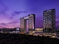

Em Seoul existem muitos pontos turisticos mas, recomendamos que visitem o Gyeongbokgung, um simbolo icónico tanto da cidade como do país. Precisa de descansar? Não procure mais, em Seoul encontra o Grand Mercure Ambassador Hotel, também conhecido como o Dragão de Seoul, por ter forma semelhante a um. Tower of Seoul
Tower of Seoul
Always read stuff that will make you look good if you die in the middle of it by:Unknown